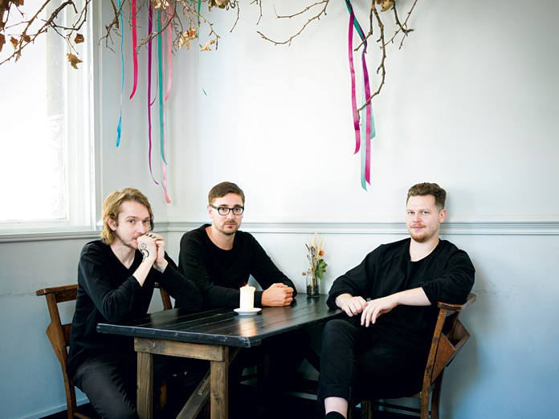

Informacion
Alt J también conocida como Δ es una banda inglesa de indie rock, formada en el año 2007.
Su álbum debut "An Awesome Wave", lanzado en mayo de 2012, les mereció el Premio Mercury 2012.
Gwil Sainsbury se retiró del grupo a principios del 2014. Su segundo álbum, "This Is All Yours", fue lanzado en septiembre del mismo año. Cameron Knight remplazará a Sainsbury en la guitarra, bajo y sampler en los conciertos de alt-J.

Acerca de su Nombre
El símbolo de la banda es la letra griega Delta mayúscula (Δ) que se utiliza en muchos campos técnicos para indicar un cambio o diferencia.
El uso de Δ se basa en la secuencia de teclas utilizada para generarla en una computadora Apple Macintosh: ⌥ Option+J.
La portada del álbum debut de la banda, An Awesome Wave, muestra una vista aérea del río delta más grande del mundo, el Ganges.
La banda antes era conocida por el nombre "Daljit Dhaliwa" y luego por "Films" pero más tarde se vieron obligados a cambiar el nombre a como hoy se conoce porque ya existe una banda estadounidense llamada "The Films"